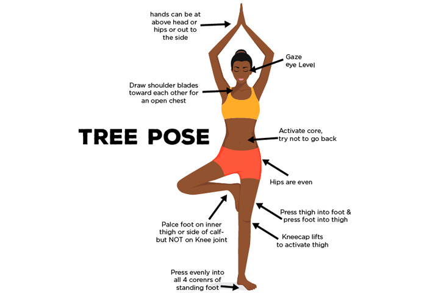

How To Do Vrukshasana
- Stand absolutely erect and drop your arms to the side of your body.
- Slightly bend your right knee, and then, place the right foot high up on your left thigh. Make sure that the sole is placed firm and flat on the root of the thigh.
- Your left leg needs to be absolutely erect. Once you have assumed this position, breathe, and find your balance.
- Now, inhale, and gently raise your arms over your head and bring them together in a ‘namaste’ mudra.
- Look straight at a distant object and hold your gaze. This will help you maintain balance.
- Keep your spine straight. Note that your body needs to be taut, yet elastic. Take in deep breaths, and every time you exhale, relax your body more.
- Gently bring your hands down from the sides, and release the right leg.
- Come back to the original position of standing tall and straight as you did at the beginning of the practice. Repeat this pose with the left leg.

Benefits Of The Vrukshasana :
- It strengthens the spine while improving both balance and poise.
- It improves and aids neuro-muscular coordination.
- It tones the leg muscles while making the ligaments and tendons of the feet stronger.
- The knees become stronger, and the hip joints are loosened.
- The eyes, inner ears, and shoulders are also strengthened in this pose.
- It relieves those suffering from sciatica and reduces flat feet.
- It makes you stable, flexible, and patient. It enhances concentration and activates all the mental faculties.
- This pose helps to deepen the thorax.
Caution:
- you must ensure that the sole of the lifted foot is placed preferably above or, in some cases, below the standing knee, but never beside it.
- Placing the foot beside the knee puts pressure on the knee as it does not flex parallel to the frontal plane.
- Those who suffer from high blood pressure should not raise their arms above the head for a long period of time. They can be held at the chest in the ‘anjali’ mudra.
- It is best that you avoid practicing this pose if you suffer from insomnia or migraine.
{kind=link}